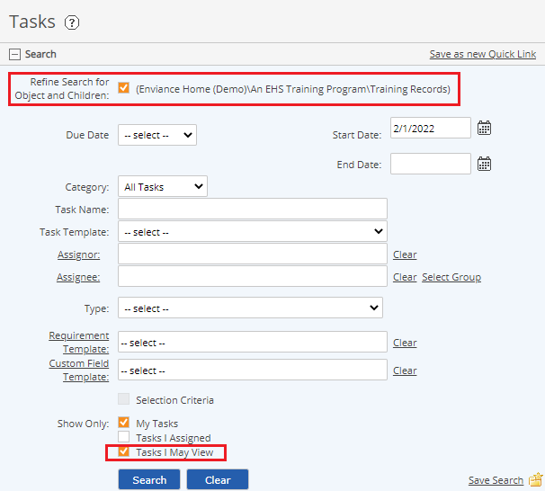

You can search for tasks related to a system object (tree object or applicable requirement) from the System Model page.
Select Tasks or Tasks (Including Children) from the right-click menu for an object (see below).
To see related tasks in a calendar, select Object Calendar from the right-click menu.
To view tasks for a specific object:
In the System Model page, right click the object in the system tree and select one of the following:
Tasks: To view only tasks associated only with this object.
Tasks (including Children): To view tasks associated with this object and all child objects (including requirements under this parent object).
Use the search criteria to expand the results. See Search Tasks.
Set the Start Date to the earliest due date for the tasks you want to view. For maximum results, select Tasks I May View to see all tasks (regardless of whether you are the assignee or assignor).
You must have View Tasks permission on the object to see tasks for which you are not assignee or assignor.

To remove the filter, uncheck the box Refine Search for ...at the top of the search pane, then click Search or, click Clear to remove all search criteria. Search criteria reverts to the initial default, My Tasks, from today’s date.
To save the search:
Click the Save Search link (bottom left corner of search pane).
Enter a name for the search.
Click Save.
You can access your saved search in future from the Custom Searches section of the Desktop.